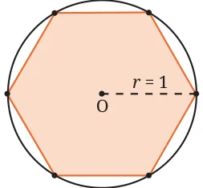
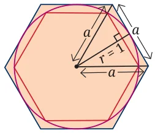
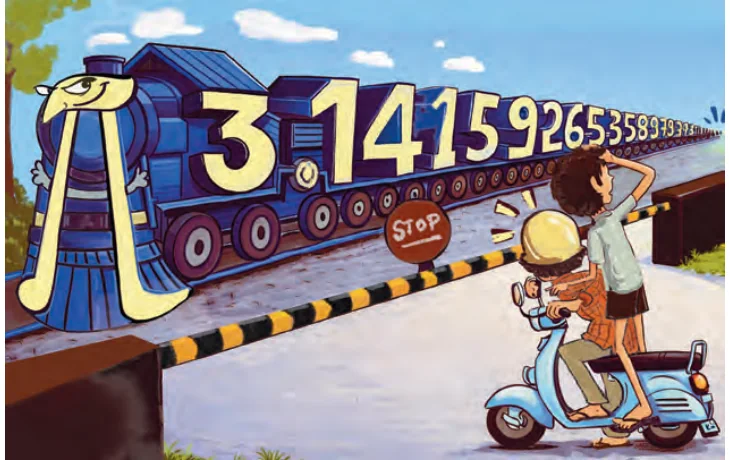

In ancient days people realised that the ratio of the circumference to the diameter of the circle does not change if we change the size of the circle. Let’s call this ratio the ‘C/D ratio’ of the circle. What is the value of the C/D ratio? How would you estimate this ratio?
HOME MEASUREMENT
You can do a simple measurement at home to estimate the C/D ratio. Take a cotton reel with thin thread around it. Measure the diameter D of the reel as accurately as possible. Unwrap and then tightly wrap the thread around the reel 20 times. Unwrap it again; measure its length L, and calculate \(\frac{L}{20\) D} . This is the ratio we want. For accuracy, the thread should be very thin. Please do the experiment! Do you get a ratio between 3 and 4? Between 3.1 and 3.2? It is also possible to estimate the C/D ratio using pure geometry, i.e., without any measurements at all! Can you imagine how?
C/D’s Adventurous Journey: From Ancient Approximations
to the Exact Formula of Mādhava
Mathematicians have been fascinated by circles, and the C/D ratio, since ancient times and across geographical regions. This constant,
which we now call \(\pi\) (we say ‘pi’ as in ‘pie’ and not as in ‘pizza’), represents a bridge between many different areas of mathematics, and connects the straight-edged world of polygons with the infinite curves of nature. While early civilisations relied on practical, ʻgood-enoughʼ values for construction and trade, the pursuit of this ratio eventually became an important pastime of mathematicians that helped to benchmark the sophistication of mathematical theories. In Mesopotamia (c. 1900 BCE), mathematicians moved beyond the crude integer value of 3. They realised that a circle had a perimeter that was slightly larger than the hexagon inscribed within it. They concluded that \(\pi\) should therefore be larger than 3, and they set the value of \(\pi\) to
be \(3 + \frac{1}{8} = 3.125\).

Fig. 6.6 The Mesopotamian Hexagon-to-Circle comparison. Can you see why this shows that \(\pi > 3\)?
By 250 BCE, Archimedes of Syracuse brought a new level of rigor to the problem. He ‘trapped’ the value of \(\pi\) between the perimeters of inscribed and circumscribed polygons. By using both an inscribed and circumscribed hexagon, Archimedes showed that \(\pi\) is between 3 and \(2 3 \approx 3.46\). Working his way up to 96-sided polygons, Archimedes found
that \(3 \frac{10}{71} < \pi < 3 1 7\) .

Fig. 6.7: Archimedes’ method utilising inscribed and circumscribed polygons. Can you see why this diagram of an inscribed and circumscribed hexagon tells us that \(\pi\) is between 3 and 2 3 ? (Hint: Use the Baudhāyana - Pythagoras Theorem.)
In about 150 CE, Ptolemy of Alexandria refined Archimedes computations for use in his astronomical tables, giving the ratio
\(\frac{377}{120} \approx 3.14167\) for \(\pi\) .
Shortly thereafter, in China, a ‘circle-cutting method’ of Liu Hui (263 CE) laid the groundwork for two breakthroughs due to Zu Chongzhi (480 CE). Zu pushed the polygon approximation method to 24,576 sides! He used this to discover the Yuelü (Approximate Ratio) of \(\frac{22}{7} \approx 3.1428\) for \(\pi\) , and also the Miü (Close Ratio) of \(\frac{355}{113} \approx 3.1415929\) for \(\pi\) . The rational fraction \(\frac{355}{113}\) is so close to \(\pi\) that it remained the most accurate value for \(\pi\) in the world for over 800 years; it is now known that no single rational fraction with denominator less than 15,000 can be as close to \(\pi\) as this fraction! In 499 CE, Āryabhaṭa provided a value of \(\frac{62832}{20000} = 3.1416\) for \(\pi\) . Crucially, he described this value as asanna, i.e., ‘approaching’ or ‘approximate’ \(- a\) profound insight suggesting that the ratio could not be given exactly as one simple fraction. Meanwhile, Brahmagupta (628 CE) suggested the use of the value \(10 \approx 3.1622\) for \(\pi\) ; while slightly less accurate, he chose it for its mathematical elegance and the ease with which it could be manipulated in equations, a preference that saw 10 become the dominant approximation in the Arab world and medieval Europe for centuries after. Over the ensuing years, many great mathematicians studied \(\pi\) , including its approximations; but no approximation was as accurate as Zu’s \(\frac{355}{113} -\) or as algebraically simple as \(\frac{22}{7}\) , 3.1416, and \(10 -\) until the work of Mādhava of Sangamagrāma, who changed the game forever. Mādhava realised that \(\pi\) was not just a number to be approximated by fractions and other finite algebraic expressions, but a limit to be reached. Mādhava thereby discovered the first exact formula for \(\pi\) :
\(\frac{ \pi }{4} = 1 - \frac{1}{3} + \frac{1}{5} - \frac{1}{7} +\) … Is that not a beautiful formula? Mādhava’s formula - given in the form of an ‘infinite series’ - was a tectonic shift for mathematics. By moving from the geometric cutting of circles to the analytical summing of numbers, Mādhava birthed the area of mathematics
known as calculus. His infinite series enabled him to calculate \(\pi\) to 11 decimal places (3.14159265358), proving that the relationship between a circle’s circumference and its diameter was a window into an entirely new area of mathematics. Better and better infinite series were developed over time that gave more and more digits of \(\pi\) even more quickly. The key breakthroughs on the problem after Mādhava were due to Nīlakaṇṭha (c. 1500), Machin (1706), Ramanujan (1914), and the Chudnovsky brothers (1988) who skilfully extended the ideas of Ramanujan. Today, using their algorithms, we now know \(\pi\) to neels (100s of trillions) of digits! We will learn more about the area of calculus in later grades.
In 1706, the Welsh mathematician William Jones used the Greek symbol \(\pi\) to denote the C/D ratio, because \(\pi\) is the first letter of the Greek word perimetros for perimeter. The symbol was made popular by the Swiss German mathematician Leonhard Euler (pronounced ‘oiler’). We continue to use the same symbol today!
\(6.3 \pi\) Is Irrational
The digits of \(\pi\) go on forever, with no visible pattern. You already know that fractions give rise to decimal expansions with a rhythmic pattern, e.g., \(\frac{1}{3} = 0.33333\)..., \(\frac{1}{11} = 0.09090909\)..., \(\frac{1}{7} = 0.142857 142857\)... But for \(\pi\) , there is no such pattern! It turns out that \(\pi\) cannot be written as a ratio of two integers. Such numbers are called irrational. Remember: A rational number is a number that can be written as a fraction \(\frac{a}{b}\) where a, b are integers with b not equal to 0, e.g., numbers such as \(1 \frac{2}{3}\) , \(\frac{ - 7}{11}\) and 1.4. In Grade 8, you learned that 2 is an irrational number. From their writings, it seems that Āryabhaṭa and Zu Chongzhi regarded \(\pi\) as irrational. Centuries later (1761), the mathematician Lambert showed that this is so; \(\pi\) is irrational. But to prove this requires more advanced mathematics, which we will learn much later.
Since \(\pi\) is irrational, there is no ‘best fraction’ for \(\pi\) . If there is any fraction that is close to \(\pi\) , we can find another fraction that is closer. The well-known fraction \(\frac{22}{7}\) is good enough for most practical uses. But it is important to note that \(\pi\) is not equal to \(\frac{22}{7}\) (they are ‘close but not equal’). So we write \(\pi \approx \frac{22}{7}\) and also \(\pi \ne \frac{22}{7}\) . In the same way, we can write \(2 \approx 1.414\) and also \(2 \ne 1.414\). As noted earlier, a much better approximation for \(\pi\) is \(\frac{355}{113}\) .

Fun Fact
Here’s a fun way to remember the first few digits of \(\pi\) :
How I wish I could recollect pi.
Count the number of letters in each word (3, 1, 4, 1, 5, 9, 2) and you get the digits of \(\pi\) ! So, \(\pi \approx\) 3.141592… Since \(\pi \approx 3.14\) and also \(\pi \approx \frac{22}{7}\) , March 14 (written ‘3 - 14’ in North America) is celebrated each year as Pi Day, and 22 July (written ‘22-7’ in
India) is celebrated each year as Pi Approximation Day.